新手入门指南
原页面：Beginner's guide
本指南旨在带新手熟悉界面的机制，即钢铁雄心 IV。若想深入了解各项机制（包括电脑计算背后的一些具体数学公式），请点击专讲这些概念的条目链接。
点击游戏的 Play 按钮之前
在点击游戏的 Play 按钮之前，不妨先熟悉界面上显示的信息、各种按钮和标签页的名称，以及它们的功能。
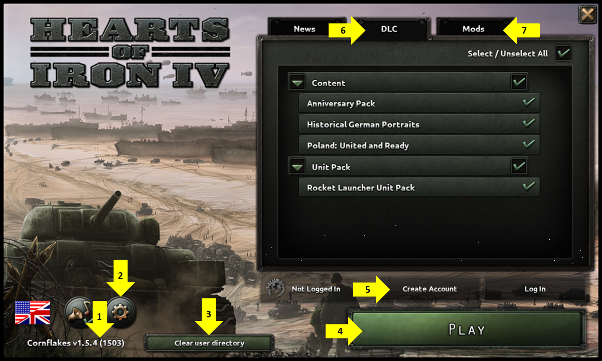
- 游戏版本——可以看到，图中显示的游戏版本为 1.14.3，校验和为 21de。存档会绑定到当前游玩的游戏版本和校验和。如果存档的版本和校验和与游戏版本和校验和不一致，该存档将无法使用。请注意，游戏通常处于自动更新状态，一旦新版本发布，旧版本的存档就无法使用，除非将游戏回滚到与之匹配的版本。回滚方法可在 Paradox 论坛上找到。注意，该操作需要为每个已拥有的游戏分支提供游戏代码，并且需要一个 Paradox Interactive 账号才能查看这些代码并将其输入 Steam。
- 视频显示按钮——点击齿轮图标会打开视频显示菜单。该菜单有三个下拉菜单：显示模式、分辨率和刷新率。显示模式提供三种选择：全屏、窗口和窗口化全屏。推荐使用全屏，因为在某些系统上，窗口和窗口化全屏模式已知会导致启动问题，例如黑屏和无法启动游戏（参见游戏故障排查）。分辨率提供多种选择，例如 1600x1024、1680x1050 等。把游戏分辨率匹配到显示器的原生分辨率通常能获得最佳观看体验。刷新率也应尽可能设置为与显示器一致。推荐选择 60 Hz，因为它相当常见，而 50 Hz 选项已知会导致黑屏和无法启动游戏等启动问题。
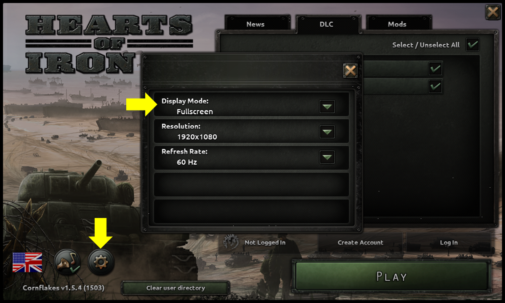
此图有一个垂直箭头指向齿轮图标所代表的视频显示按钮。点击「齿轮图标」会打开视频显示菜单（见水平箭头），其中显示 3 个下拉菜单：显示模式、分辨率和刷新率各一个。点击每个小型倒置绿色三角形都会打开一个菜单，用于选择你的视频偏好。图中显示已选中全屏、1920x1080 和 60 Hz。 - 清空用户目录按钮——点击此按钮会清空你的《钢铁雄心4》用户目录。只有在遇到游戏崩溃时才点击此按钮。参见图中的提示框。
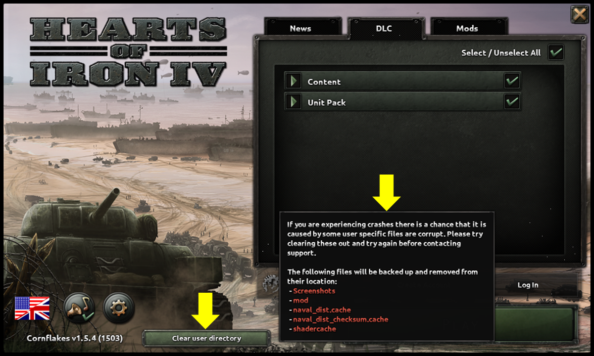
一张用箭头分别指向「清空用户目录」按钮及其对应提示框的图。 - Play 按钮——在选择好视频设置、DLC 和模组后，点击游戏的 Play 按钮。
- 创建账号按钮——点击此按钮可创建 Paradox Interactive 账号。建议你创建账号，因为一旦游戏出现问题，它可以让你获得技术支持。此外，还需要 Paradox Interactive 账号登录 Paradox Plaza 网站，才能获取所拥有的每款游戏此前各分支的代码。这是由于《通用数据保护条例》（GDPR）的实施。其他好处还包括可以提交错误报告、提出游戏建议等。
- DLC 标签页——点击 DLC 标签页会显示为本游戏购买的所有可下载内容。点击某个项目会在该项目旁显示绿色勾号，表示它已被选中并加入游戏。没有勾号表示该项目未加入游戏。图中显示所有已购买项目（Anniversary Pack、Historical German Portraits、Poland: United and Ready、Rocket Launcher Unit Pack）均已被选中。另请注意，Together For Victory、Death or Dishonor 和 Waking the Tiger 等 DLC 未在图中显示，因为该用户没有购买这些项目。

- 模组标签页——点击模组标签页会显示一个下拉菜单，可展开所有已为游戏下载的模组。点击某一项会在该项旁打上绿色对勾，表示它已被选中加入游戏。没有对勾表示该项未被选入游戏。图中显示「Coloured Buttons」和「More Division Icons」两个模组已被选中。模组可从 Steam 创意工坊下载。请注意，有些模组会禁用游戏过程中获得成就的能力，还有些模组尚未针对最新版本更新，可能导致系统崩溃。阅读作者关于其模组的说明，通常能看出该模组是否兼容成就，以及它已更新到《钢铁雄心4》的哪个版本。
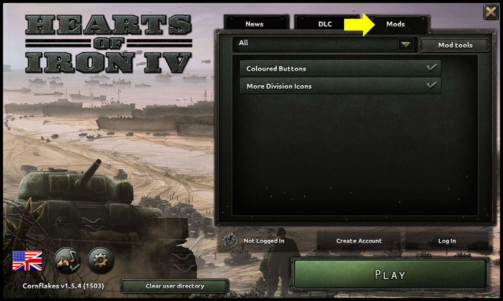
一张用箭头指向「模组」标签页的图。图中已选中「Coloured Buttons」和「More Division Icons」两个模组。
游戏故障排查
如果游戏无法启动、卡死、崩溃到桌面（CTD）或「黑屏」，请尝试下列解决方法。最常见的原因和解决方法列在最前面。如需更多帮助，请联系技术支持或访问论坛。联系技术支持需要一个 Paradox Interactive 账号。
- 部分杀毒软件会自动拦截可执行文件：请尝试将 hoi4.exe 和 steam.exe 加入杀毒软件的例外列表。
- 显卡驱动过时：请尝试下载并安装显卡的最新驱动。
- 操作系统设置不兼容：请尝试调整 Windows 兼容性设置，先找到 hoi4.exe 文件（典型路径为 C:\Program Files (x86)\Steam\SteamApps\common\Hearts of Iron IV），右键点击 hoi4.exe 文件，点击「属性」，点击「兼容性」标签页，然后尝试不同的设置。
- 显卡设置不兼容：请尝试以全屏模式而非窗口模式运行游戏。在游戏启动界面中，点击齿轮图标打开视频显示菜单。该菜单包含 3 个下拉菜单：显示模式、分辨率和刷新率。显示模式提供三种选择：全屏、窗口和无边框。请选择全屏选项。
- 显卡设置不兼容：请尝试手动编辑 settings.txt 文件，先找到 settings.txt 文件（典型路径为 C:\Users\Documents\Paradox Interactive\Hearts of Iron IV\settings.txt）。然后打开 settings.txt 文件，手动将文本改为：fullScreen=yes 和 borderless=no。注意：只修改 fullScreen 和 borderless 这两项文本设置。除非你已备份文件并清楚自己在做什么，否则不要改动或删除其他设置。
- 用户文件损坏：尝试清除用户目录。在游戏界面中点击「Clear user directory」按钮。然后退出游戏并重新启动。
- 游戏文件损坏：尝试干净地重新安装游戏。
- 将重要的游戏文件移动到备份文件夹。
- 打开 Steam，在 Steam 库中选择 Hearts of Iron IV 游戏，然后右键点击并选择「卸载…」
- 前往 C:\Program Files (x86)\Steam\SteamApps\common，手动删除 Hearts of Iron IV 文件夹。
- 前往 C:\User\Documents\Paradox Interactive，手动删除 Hearts of Iron IV 文件夹。
- 打开 Steam，在 Steam 库中选择 Hearts of Iron IV 游戏，然后点击「安装」。此时不启动游戏！留在 Steam 中！
- 仍在 Steam 界面时，右键点击 Hearts of Iron IV 游戏，选择「属性」，点击「本地文件」标签页，然后点击「验证游戏文件的完整性」按钮。这将校验刚刚安装的游戏文件。应会看到「所有文件均已成功验证」的提示。
- 在未启用任何模组的情况下启动游戏。
- 测试游戏
开始游戏
单人游戏提供《钢铁雄心 IV》的单人游戏。其他所有国家均由电脑控制。单人游戏菜单可以游玩教程、开始新游戏，也可以载入此前的存档。
游玩教程可以快速了解游戏，因此强烈推荐。教程游戏结束后，可以像标准流程一样继续进行。
多人游戏让《钢铁雄心 IV》玩家可以与其他人在线游玩。一局《钢铁雄心 IV》最多可容纳 32 名玩家同时游玩（包括对抗与合作两种多人模式）。游戏主机可以开始一局新游戏，或载入此前未完成的对局。
选项可用于自定义《钢铁雄心 IV》的声音、画面和玩法细节，包括调整显示器分辨率和图形、声音的用户偏好。第一个标签页包含非常重要的「游戏设置」。
完成基本设置后，玩家可以选择一个剧本和一个在该局游戏中要扮演的国家。
1936 年的世界
1936 年剧本从 1936 年 1 月 1 日开始。1936 年剧本最容易导向不同版本的第二次世界大战，因为开局时的同盟或战争都较少。要从战前就开始组织并规划经济，1936 年正是起点。该剧本的重点是为武装力量和战争计划打下基础，开局时侧重生产、科研和外交。
选择国家
每个剧本都会显示一个菜单，列出七大主要（ 法国、美国
法国、美国 、英国、
、英国、 德意志国、意大利
德意志国、意大利 、日本和
、日本和 苏联），以及一份拥有非通用内容的小国
苏联），以及一份拥有非通用内容的小国 国家列表。无论选择哪一个，之后都会显示世界地图，以便更改玩家的选择，包括挑选此前未列出的国家。
国家列表。无论选择哪一个，之后都会显示世界地图，以便更改玩家的选择，包括挑选此前未列出的国家。
开局国家分为两大类：
- 主要国家是这一时期占主导地位的列强，拥有最庞大的军队和经济。因此选择主要国家意味着玩家需要管理更多事务，并在决定第二次世界大战的结局中扮演更重要的角色。
- 小国需要管理的事务较少，但仍可能拥有可观的军事与经济实力，从而在自选的一个或多个地区影响战争走向。有些小国如
 澳大利亚或墨西哥
澳大利亚或墨西哥 基本不会卷入战争，可以从容按自己的节奏备战；而另一些小国如中国和
基本不会卷入战争，可以从容按自己的节奏备战；而另一些小国如中国和 捷克斯洛伐克则可能很快就要与远强于自己的列强开战。
捷克斯洛伐克则可能很快就要与远强于自己的列强开战。
最终玩家可以选择任何想要的国家，但应当注意，像 不丹这样的国家可能并不最适合作为第一个游玩的国家。我们推荐选择你最了解的国家，或者你认为最好玩的国家！
不丹这样的国家可能并不最适合作为第一个游玩的国家。我们推荐选择你最了解的国家，或者你认为最好玩的国家！
游戏设置
开始游戏前，地图右下角是游戏设置。在这里玩家可以开启或关闭铁人模式与历史国策，并用难度设置让游戏更难或更简单，还可以增强一个或多个主要国家的相对实力（这只是让它们更强，而不是更聪明）。这里还有一个图标用于显示本局能否获得 Steam 成就，这需要铁人模式以及普通或更高难度。设置完成后，点击右下角的游戏按钮开始游戏。
难度设置
- 主条目：难度
玩家可以选择一个总体难度，对自己和/或 AI 全局施加修正。此外，玩家还可以对七大主要国家分别施加不同的修正，从而只增强/削弱某一个国家及其所在战线。
界面
- 主条目：用户界面
《钢铁雄心 IV》的用户界面对 Paradox 策略游戏的老玩家来说会立刻感到熟悉。屏幕左侧用于管理国家层面的重大事务，屏幕顶部会出现警报标签，提示需要注意的事项，而屏幕右侧则专门显示部队信息。屏幕最上方的边框会包含关于游戏局势和世界局势的重要概要信息。
顶部信息栏
在主游戏界面左上方至中部的区域，有一行从左到右排列的数字。
 政治点数
政治点数- 这是国家领导层积累的政治资本。政治点数可用于完成国策理念、任命ministers（政治顾问、设计商、理论家和军事参谋）、推行决议、变更trade laws、经济法令、conscription laws以及部分外交行动。每个国家每天获得+2[1]点政治点数，这一数值可受Nation Leader traits、政治顾问、稳定度、国家精神、国策的选择、Political Events、Political Decisions或玩家操作影响。
 稳定度
稳定度- 衡量民众对其政府支持程度的指标。稳定度低的国家会在factory and dockyard output、政治点数获取和消费品方面受到惩罚，同时占领区的抵抗度获取量会增加。平均值稳定度为 50%。稳定度为 50% 的国家既不会获得也不会失去任何东西。稳定度高于50%[2]会带来与工厂和船坞产出、政治点数及消费品相关的正面修正，而稳定度低于50%[2]则会在这些方面带来负面修正。
 战争支持度
战争支持度- 衡量民众对战争支持度程度的指标。战争支持度直接影响动员速度、指挥点数获取，以及在核心领土上的进攻与防御。法西斯和好战国家通常初始战争支持度更高，但最终可能被进行防御战争的民主国家超越。国家在防御战争中会获得战争支持度正面增益，在进攻战争中则获得负面增益。战争支持度还受世界紧张度、舰队之傲、敌方轰炸、盟军拦截、敌方运输船队袭击、英雄阵亡以及特工propaganda影响。战争支持度低的国家往往投降得更快。
 人力
人力- 可用于创建和补充军事单位的人力。它取决于国家控制的领土（核心与occupied提供的人力产出不同），并受多种因素影响，主要是conscription laws、国家精神以及“在建单位”的数量，也就是处于recruitment状态的单位。
- 工厂
- 三个独立的数字，分别列出可用于新订单的军用工厂、海军船坞和民用工厂。我们将在后续章节中介绍它们的作用。
 燃料
燃料- 燃料由该国过剩的石油产生。每个国家都有燃料上限，可通过建造silos和infrastrucure来提高。燃料产量受可用石油（本国产出与贸易获得）、
 科研和经济法令影响。
科研和经济法令影响。
 后勤满足度
后勤满足度- 后勤运力（满足度）表示你的补给线得到满足的程度。如果你的国家缺少用于转运全部补给需求的火车、卡车或运输船队，你的单位获得的补给就会减少，从而可能导致补给惩罚。
- 运输船队
- 可用运输船队（也称运输船）的数量。每笔海外战略资源贸易都需要分配convoy单位。跨洋跨海运送陆军单位需要分配transports。可在单位生产菜单中建造新的运输船队来增加可用运输船的数量。
 陆军、
陆军、 海军和
海军和 空军经验
空军经验- 当单位作战时，或者就集团军而言演习时，它们会获得经验。陆军经验可在单位设计商中用于编辑或创建新的陆军师编制，或改装坦克及坦克变型装备。空军经验可用于改装飞机，为其提供速度、火力等方面的加成。海军经验可用于改装舰船，或在舰船设计商中创建新舰船型号或升级旧型号。
- 三种经验都可用来获得科研速度加成，比例为每 100 点经验换取相应陆军、空军或海军学说 100% 的科研速度加成。海军经验可用于为某些海军模块获得 50-150% 的科研速度加成。
- 核武器
- 研究出核武器后，顶部信息栏会出现一个带数字的图标，显示该国可用的核弹数量。
 世界紧张度
世界紧张度- To the upper right of the screen there is a globe
 世界紧张度为 100% with a percentage below it, indicating the level of world tension. This percentage is the measure of how close the world is to world war. Some diplomatic and military actions, especially for democratic or neutral nations, require world tension to reach a specific level. World tension is increased by historical 事件, declarations of war, and other hostile diplomatic actions. The globe can be selected and the Player can access a list of events affecting world tension and a list of ongoing wars.
世界紧张度为 100% with a percentage below it, indicating the level of world tension. This percentage is the measure of how close the world is to world war. Some diplomatic and military actions, especially for democratic or neutral nations, require world tension to reach a specific level. World tension is increased by historical 事件, declarations of war, and other hostile diplomatic actions. The globe can be selected and the Player can access a list of events affecting world tension and a list of ongoing wars.
主要地图模式
陆地地图模式：包含以下三个细节层级，是游戏大部分时间所见的模式。也称为默认地图模式。
国家表示国家的陆地边界。与国家的互动在外交范畴内进行。国家都有名称。
国家由各个州组成。工厂、基础设施以及大多数用民用工厂建造的设施都以州为单位进行建设，每个州可拥有的设施数量有限。州还有自己的名称！
每个州内部是省份。与省份的互动主要通过陆军单位以及一组通常用于支援这些单位的建筑来实现——即要塞和海军基地。省份没有名称，除非其具有特定数量的胜利点价值，其详细信息可在州概览界面的底部查看。
还有另外三种玩家常用的地图模式，它们对区域或地区的定义基本无视国界，并且可能涵盖多个州。
海军地图模式：海域。向海军舰队下达命令时，最多可选择三个相邻海域。与陆地地图模式完全独立。所有海域都有名称。
空军地图模式：叠加在陆地和海洋地图模式之上。空军基地被指派负责特定的战略区域，航空队则被赋予任务。随后空军基地会让其飞机在该战略区域内执行任务。战略区域也有名称。
补给地图模式：在新的更新中，补给系统经过重做，改为围绕铁路系统构建。此外还有补给中心，以及用颜色显示该州能否为你的部队提供补给支持的地图。
这三种区域都用蓝色/绿色/黄色/红色边框高亮，表示该区域在优势（陆/海）或充足度（补给）方面的中立/良好/中等/恶劣状况。
主菜单栏
国旗及其右侧紧邻的 9 个图标按钮（启用 La Résistance 后为 10 个）可直接打开与国家互动的主要菜单。这些菜单按钮的快捷键见下文，它们按键盘最上一排从左到右依次排列。
| 快捷键 | Q | Shift+Q | Shift+W | W | E | R | T | Y | U | I | Shift+E |
|---|---|---|---|---|---|---|---|---|---|---|---|
| 打开 | 政府 | 决议 | 情报机构 | 科研 | 国际市场 | 贸易 | 建造 | 生产 | 招募与部署 | 后勤 | 军官团 |
国家信息与发展
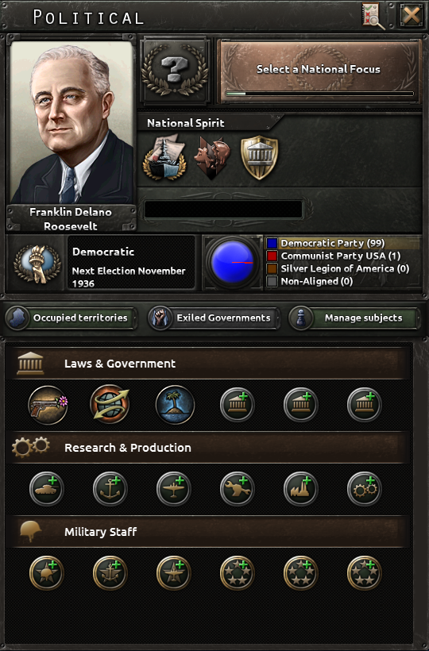
屏幕最左侧是国旗。点击国旗可打开国家状态视图，其中包含国家领袖肖像、政治制度、四种意识形态各自的支持率、当前生效的国家精神，以及三排可通过花费政治点数更改的项目。该视图中还有管理被占领土、流亡政府和附属国的按钮。
如果当前没有生效的国策，玩家会被提示为国家选择一个国策。大多数国策需要 70 天完成，每天消耗 1 点政治点数。国策构成一棵树，类似科技树，但它们解锁的不是科技，而是关乎国家发展方向的选择。你可以选择暂时专注于工业或科技发展，或将本国外交转向某些特定国家，缔结科研协定、建立阵营、获取宣称或威胁开战。部分国策选项互斥；例如德意志国不能同时与中国和日本交好。
该菜单还允许花费政治点数来更改政府法令或聘请政治、军事和工业顾问。这些统称为理念。大多数更改至少需要 150 政治点数，非常强力的顾问可能高达 250，而极其强力的法令和顾问则可能高达 300 政治点数，有时甚至更多。
法令与政府
- 征兵法令：影响该国可用于服兵役的人力数量，以及工厂产出、船坞产出、建造速度和训练时间。
- 贸易法令：影响投放市场的资源、工厂产出、船坞产出、建造速度和科研时间。
- 经济法令：影响用于消费品的工厂数量、可用人力、民用和军用工厂建造速度，以及工厂转换速度。
最多可聘用三名政治顾问，在不同领域为国家提供加成。
科研与生产
可以聘用多家设计公司，例如坦克设计商、舰船设计商、飞机设计商、装备设计商和工业集团，以在相关领域获得费用减免与加成。这些加成可能包括研究时间缩短、装备产量提高或装备战斗能力提升的任意组合。
还可以聘用理论家来降低学说经验花费、降低火箭研究或核研究的花费，或为装甲装备提高 10% 的最大速度。
军事参谋
作为军事参谋，可以聘请陆军总司令、海军总司令和空军总司令，以提升相关领域的战斗属性。此外最多还可聘请三名最高统帅部成员。
决议
屏幕顶部带有法槌图案的灰色按钮可打开事件与决议菜单。决议允许国家执行特殊项目，例如转换意识形态、发动边境战争、取缔政党、审查新闻界、 挖掘资源等。这些决议通常花费 25 到 150 政治点数。决议介于国策树与事件之间（支持更多模组制作和机制）。
挖掘资源等。这些决议通常花费 25 到 150 政治点数。决议介于国策树与事件之间（支持更多模组制作和机制）。
情报机构
屏幕顶部带有眼睛图案的灰色按钮可打开情报机构菜单。建立情报机构后，国家可以招募特工（特工）、扩展情报能力并开展情报行动（特工任务）。
科研
屏幕顶部带有锥形瓶图案的灰色按钮可打开科研菜单。其中会有两到四个科研槽可用于研究特定科技，但选择特定的国策理念可能解锁额外的科研槽。
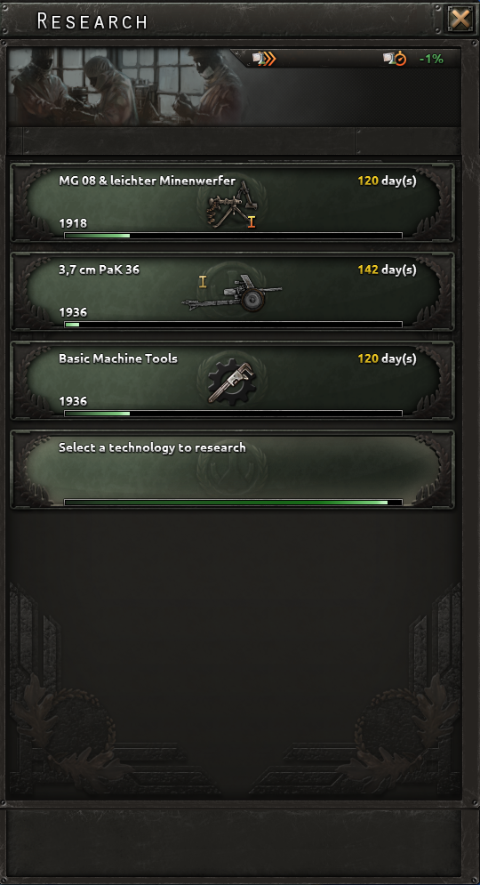
根据剧本不同，每个国家开局时拥有符合历史的科技和理论水平。所有科技树都沿历史时间线标注。在历史日期之前研究某项科技或单位，会比在历史日期当天或之后研究花费更多天数。这一惩罚可通过选择特定的国策理念来修正。
科研分为九个类别。注意：随着 1.11.0 Barbarossa 补丁的发布，学说不再属于科技树的一部分。
- 步兵：研究更好的步兵武器与装备，并解锁特种步兵师类型。这里会解锁摩托化步兵与机械化步兵等机动步兵、伞兵、海军陆战队、山地部队、卡车、摩托化火箭炮（MRA）、两栖车辆和装甲车（需要「抵抗运动」DLC）。

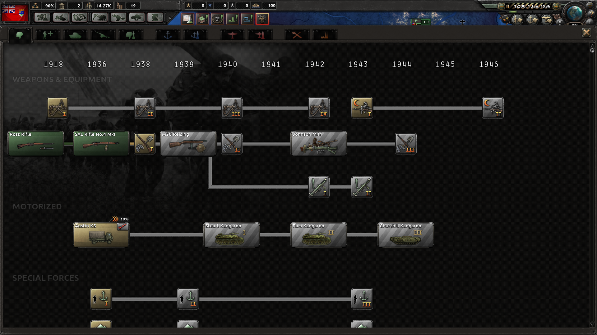
步兵科技界面——已过时（1.11.0 Barbarossa 补丁把学说从科研中移除并加入军官团）。
- 装甲：解锁并改进轻型（LARM）、中型（MARM）、重型（HARM）、超重型（SHARM）与现代主战坦克（MBT）的研究，以及它们的变体：坦克歼击车（TD）、自行火炮（SHART 或 SPG）和自行防空炮（SPAA）。启用一步不退
 DLC 后，该面板由各种坦克底盘科技以及从装甲板到发动机的各类模块科技组成。
DLC 后，该面板由各种坦克底盘科技以及从装甲板到发动机的各类模块科技组成。
- 海军：研究可解锁并改进舰船：驱逐舰（DD）、巡洋舰（CL、CA）、重型舰船（BB、BC）、航空母舰（CV）和潜艇（SS）舰体科技，以及用于反潜作战的驱逐舰模块、发烟器、改进型飞机弹射器，还有巡洋舰和重型舰船的装甲。
- 海军支援：研究可解锁海军武器、海军训练、运输船和水雷战科技。
- 空军：研究可解锁并改进飞机：战斗机（FTR）、重型战斗机（HFTR）、近距空中支援（CAS）、海军轰炸机（NAV）、战术轰炸机（TAC）和战略轰炸机，包括舰载型和喷气推进型号。
- 工程：研究电气工程以改进或解锁无线电（用于增援率加成和通信连）、雷达（用于探测加成）和计算机（用于加密和解密加成），研究原子能以解锁核反应堆和核弹，研究实验火箭以解锁并改进火箭引擎（用于火箭截击机和导弹）和喷气引擎（用于喷气式飞机）。
- 工业：研究可改进军用工厂和船坞（提升产出、生产效率及保持率、军事装备转换速度，降低工厂被轰炸的脆弱性并加快修复速度）、建造速度（加快建造）、资源开采（提高自然资源产出）以及合成炼油厂（提高燃料和橡胶资源产出）。
外交
带有握手图案的灰色按钮可打开外交菜单。该菜单显示国家列表以及若干用于缩小范围的筛选按钮。注意：某次更新后，外交图标被“国际市场”取代。该界面底部有一个“打开外交”按钮。
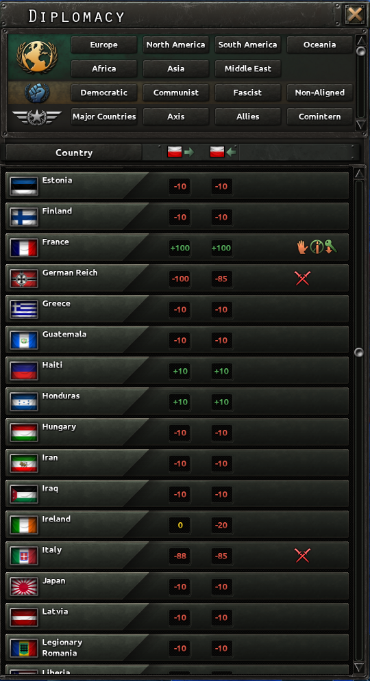
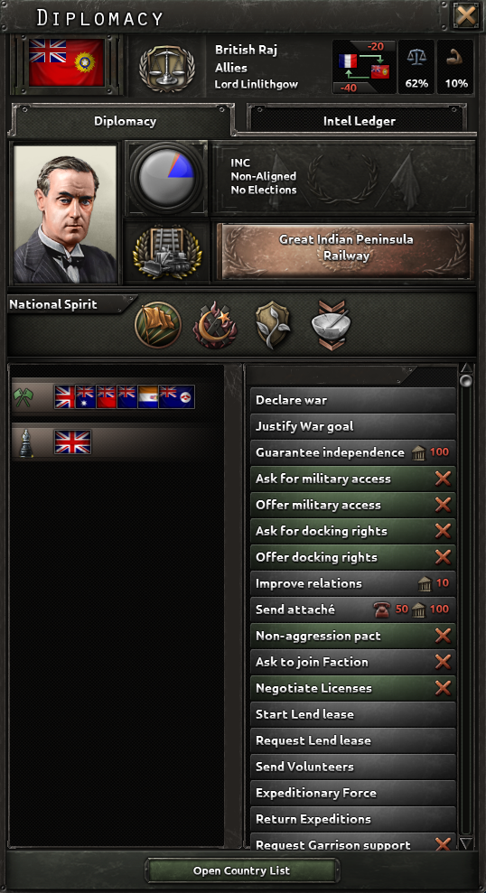
可按以下条件筛选：
- 世界地区
- 非洲
- 亚洲
- 欧洲
- 中东
- 北美洲
- 大洋洲
- 南美洲
- 意识形态
- 共产主义
- 民主主义
- 法西斯主义
- 不结盟（中立）
- 主要国家
- 阵营
- 同盟国
- 轴心国
- 共产国际
点击某个国家进行互动后，会显示其领袖肖像，以及一些关于该国动向的信息。菜单右上角会有两面小旗帜和箭头，表示两国之间的关系。
只要满足条件，在外交菜单中可以采取多种行动。民主国家在采取侵略性外交行动方面的能力尤其受限，除非世界紧张度已攀升到足够高的水平。
将鼠标悬停在每个选项上，可查看该外交行动的说明以及必须满足的条件。
贸易
带有箱子和弯曲交换箭头图案的灰色按钮可打开贸易菜单。其中会有若干标签页和可排序的列，列出可交易的主要资源、所需条件（如运输船队数量）以及可能的贸易伙伴。这些潜在贸易伙伴还可按世界区域、邻国或附属国（傀儡国）进一步筛选。
游戏中有六种主要资源：石油、铝、橡胶、钨、钢铁和铬。它们用于建造坦克、战列舰、飞机等。每一条新开设的重型武器装备生产线都需要一定数量的资源。虽然没有必需资源也能生产这些单位，但生产速度会慢得多、效率也低得多。
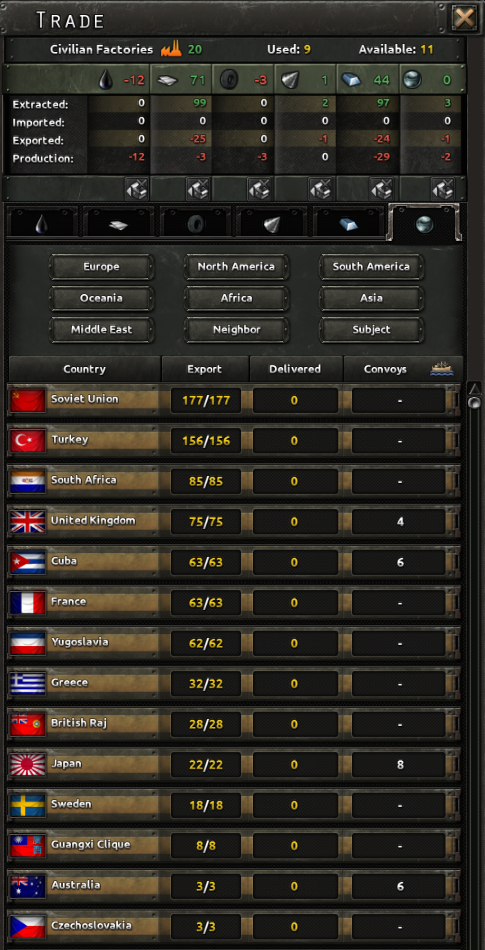
资源分布在地图上的特定地点，且分布并不均衡。几乎总是需要通过贸易来获取所需之物。
要进行资源贸易，点击国家名称并拖动滑块来决定贸易数量。资源通常以 8 为单位进行贸易。每次贸易，除非经由陆路进行，都至少需要 1 艘运输船队，并根据海上距离和资源总量需要额外的运输船队。
每进口八个单位的资源就需要付出一个民用工厂，其生产能力将归属与该国进行贸易的国家。因此，出口会使一个国家的工业更强大，因为民用工厂“产能”从其他国家被抽取过来；但大量进口会使一个国家变弱，因为会损失民用工厂“产能”。不过，为了让战争机器以最优效率运转，进口资源可能是必要的。提示：与傀儡国贸易时，每付出一个民用工厂所获得的资源远多于 8 个。
建造
带有挖掘机图案的灰色按钮会打开 建造菜单。在这里向民用工厂分派任务——建造基础设施、新工厂、防御工事等等。
建造菜单。在这里向民用工厂分派任务——建造基础设施、新工厂、防御工事等等。
民用工厂负责对州进行一切建设。可用于建造的工厂数量取决于国家规模、有多少工厂被用于为国民生产消费品（经济法案），以及有多少工厂被“交换”以换取战略资源。民用工厂可以通过继续建造来增加，但要小心，因为每个省份能支撑的工厂数量有限。单个建造项目最多可投入十五座工厂，多出的工厂会继续处理队列中的下一个项目。
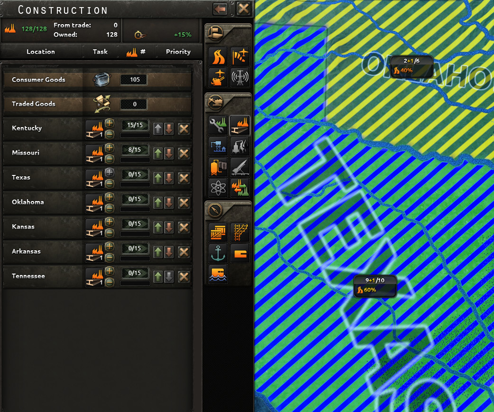
可以用民用工厂建造的建筑分为三类。
州建筑：
这类建筑会改善该州，但不占用共享建筑槽位。相反，这里的每种改善都有自己的等级和上限。
 基础设施：每个州都有基础设施等级，它决定在该州补给单位的难易程度、军事单位通过该州的移动速度、共享建筑的建造速度，并提高资源产出。
基础设施：每个州都有基础设施等级，它决定在该州补给单位的难易程度、军事单位通过该州的移动速度、共享建筑的建造速度，并提高资源产出。 空军基地：空军基地越大，能有效容纳的飞机越多。空军基地用于驻扎军用飞机。
空军基地：空军基地越大，能有效容纳的飞机越多。空军基地用于驻扎军用飞机。.png) 防空：帮助防御一个州，抵御试图对炼油厂、工厂、基础设施等设施进行战略轰炸的敌机。
防空：帮助防御一个州，抵御试图对炼油厂、工厂、基础设施等设施进行战略轰炸的敌机。 雷达站：帮助空军发现并拦截敌方航空队，提高对附近海域敌方舰队的探测能力，并获取附近各州敌军的情报。
雷达站：帮助空军发现并拦截敌方航空队，提高对附近海域敌方舰队的探测能力，并获取附近各州敌军的情报。
可建造的共享建筑数量受该州可用槽位数量限制。槽位数量可通过研究工业科技来增加。
 军用工厂：用于生产武器、装备、飞机和车辆。
军用工厂：用于生产武器、装备、飞机和车辆。 民用工厂：用于生产和提升一个国家的军事/工业能力。
民用工厂：用于生产和提升一个国家的军事/工业能力。 合成炼油厂：生产合成燃料和橡胶，对缺乏其中之一的国家的尤其有用。
合成炼油厂：生产合成燃料和橡胶，对缺乏其中之一的国家的尤其有用。 海军船坞：用于生产舰船和运输船队。只能在沿海州建造。
海军船坞：用于生产舰船和运输船队。只能在沿海州建造。 火箭基地：生产火箭并向附近国家发动火箭袭击的场所。
火箭基地：生产火箭并向附近国家发动火箭袭击的场所。 核反应堆：生产核武器。
核反应堆：生产核武器。
省份建筑：
省份建筑建造在HoI4中最小的领土单位——省份上。
 海军基地：驻扎并维修海军舰队，还可通过运输船队收发补给与资源。每提升一级海军基地都会增加补给容量与补给吞吐量。
海军基地：驻扎并维修海军舰队，还可通过运输船队收发补给与资源。每提升一级海军基地都会增加补给容量与补给吞吐量。 陆上堡垒：在战斗中每有一级堡垒，就给进攻方施加 -15% 的攻击惩罚。从多个方向进攻会降低堡垒的效果。
陆上堡垒：在战斗中每有一级堡垒，就给进攻方施加 -15% 的攻击惩罚。从多个方向进攻会降低堡垒的效果。 海岸堡垒：在海军登陆战斗中对进攻方每级堡垒施加 -15% 的攻击惩罚。
海岸堡垒：在海军登陆战斗中对进攻方每级堡垒施加 -15% 的攻击惩罚。
生产
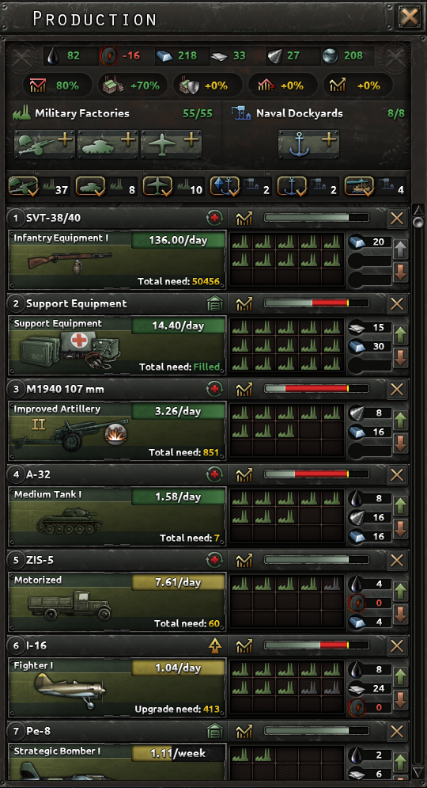
带扳手的灰色按钮会打开生产菜单。在这里为军用工厂和船坞分配任务，以建造装备、军用车辆、飞机和舰船。投入某个项目的工厂越多，产量就越高。生产出的步兵、装甲和火炮装备随后会被分配给相应的师，用于组建新单位，或用于补充与升级现有部队。多余的装备会留在国家库存中。生产出的飞机会存入预备机库。海军单位会自动进驻等级最高的海军基地，不过也可以指定港口或舰队（建议对苏联这样做，以免新造舰船全都困在黑海）。
工厂产出取决于高端单位所需战略资源的可获得性，以及该国工业的效率上限。新生产线需要一段时间才能达到完美效率，而如果为生产线增加工厂，也会损失一些效率。工厂的生产力和效率可在工业科研树中提升。
招募与部署
带坦克的灰色按钮会打开陆军编制器菜单，用于招募和部署单位。在这里决定要训练哪些类型的师。这些师将由生产菜单中建造的装备和车辆来补充。把鼠标悬停在绿色进度条上，可以查看完成一个新单位需要什么。
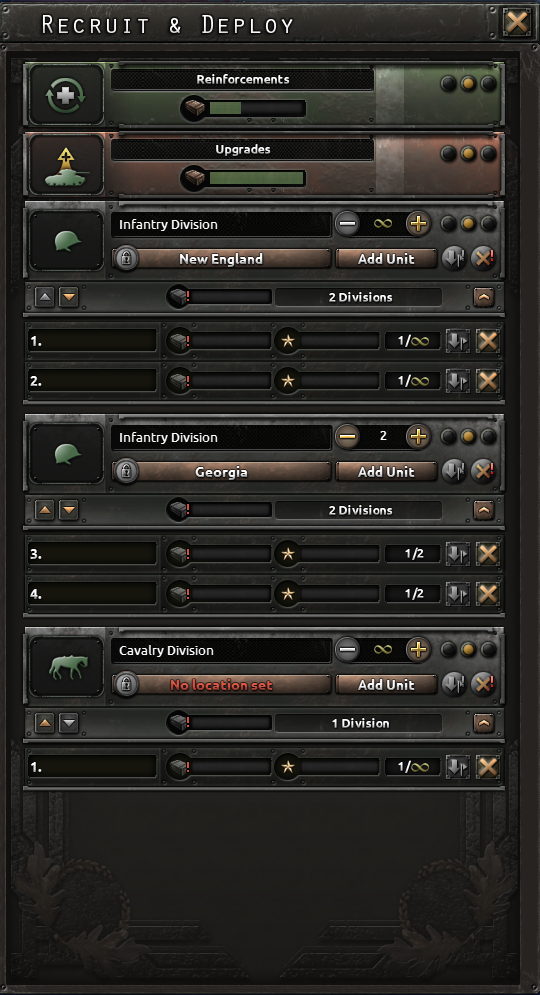
国家开局自带几个可以建造的默认师。可以花费陆军经验来设计新的师编制，或修改已有的师编制。
游戏开始时，补充和升级与组建新单位被赋予相同的权重。如果更希望把新坦克或火炮的力量集中用于全新单位，而不是把装备一点点滴向战场，也可以在此界面设置补充优先级。
后勤
带有纸和笔图案的灰色按钮会打开后勤菜单。该菜单总体汇总库存装备、该国可能存在的短缺，以及各生产线短缺多少战略资源。
后勤界面
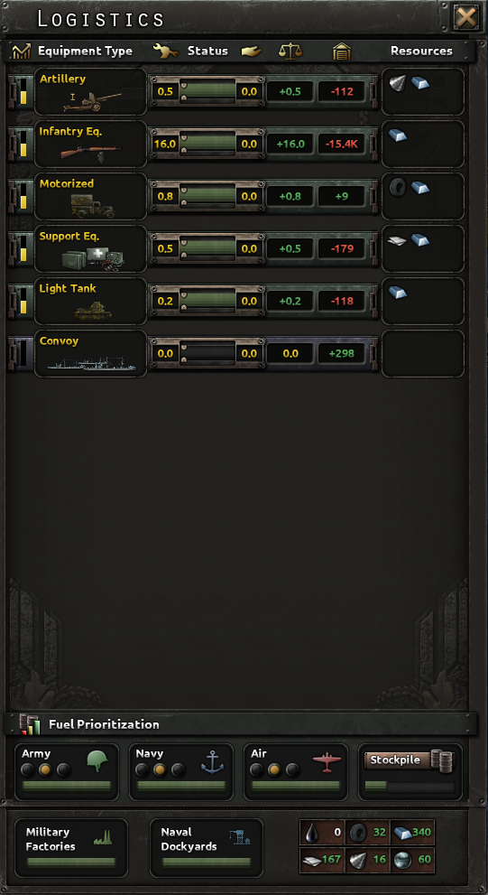
后勤界面提供全国装备和资源状况的总体概览。界面中央是装备部分，只显示该国正在生产、库存或使用的装备。以下对界面各个部分进行说明。
- 平均生产效率（列标题上方带有一个图标）显示生产该类装备的所有生产线的平均生产效率。区域内的黄色条表示各类装备的平均生产效率。

- 装备类型，其列上方标有「Equipment Type」，提供该国正在生产、库存或使用的装备的名称和图片。
- 生产量，其列上方有一只手握着扳手，显示每天生产多少该种装备。
- 状态是生产量旁边的绿色条，显示装备需求中有多少正在被生产。此外还有一个滑块按钮，如果该国每天该类装备有盈余，它位于左侧；如果每天有赤字，则位于右侧。
- 需求，列顶部有一只手，表示该国每天需要多少该种装备。
- 收支是该国每天运行的盈余或赤字，由列顶部的刻度表示。如果该国有盈余，会显示+数量；如果有赤字，则显示-数量。
- 库存是该国的库存。如果该国该类装备有富余，会以绿色显示库存数量；如果短缺，则会以红色显示缺口数量，例如补充、为新单位配备装备所需的数量，或者对运输船队而言，当前贸易所需的数量。
- 资源显示该生产线当前为生产该装备所占用的资源。若该类装备已不再生产，则不会显示资源。
界面底部包含额外信息。
- 军用工厂有一条绿色条，表示当前正在使用的军用工厂占全国军用工厂的百分比。
- 海军船坞与其左侧的军用工厂类似，显示该国海军船坞正在使用的百分比。
- 右下角的六个图标分别显示石油、橡胶、钢铁、铝、钨和铬。每个图标旁边要么是一个绿色数字，显示该国该资源的盈余；要么是一个红色负数，显示该国该资源的赤字。
库存界面
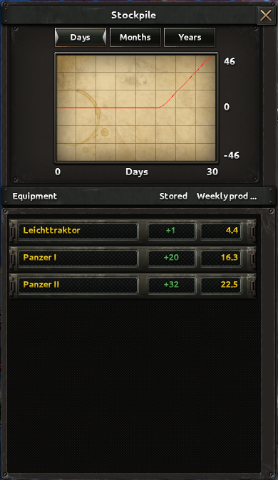
点击后勤界面上的任意装备即可进入库存界面。界面中央的图表显示库存在过去30 天、12 个月或7 年内的变化，三者各有对应的按钮位于图表上方。变化用红色线表示，图表的 X 轴是时间变量，Y 轴是库存变量。图表下方是该装备的微型概览，显示该装备的各种变体（例如基础步兵装备与武器 I）以及每种变体的库存量和每周产量。
军官团
界面顶部带有帽子图案的灰色按钮会打开 军官团菜单。该菜单总体汇总指挥点数分配情况，并允许管理军事领导层，此外还可解锁军事精神、军事学说和偏好战术。
军官团菜单。该菜单总体汇总指挥点数分配情况，并允许管理军事领导层，此外还可解锁军事精神、军事学说和偏好战术。

指挥陆军
- 主条目：战争
用鼠标左键选中部队，再用鼠标右键点击目的地即可移动。按住左键拖拽可框选一组部队，向框内所有部队下达命令。要跨海把部队运往友方领土，先将其派往拥有海军港口的省份，再按住 Shift 点击目的港口。点击日期下方的陆军视图图标或按快捷键“o”，可查看所有师的概览，包括其战斗状态。右键点击某个师的信息栏可将视角移到该师，也可按住 Shift 用左键点击多个部队将其全部选中。
把部队编成集团军，交由指挥官指挥并下达计划执行时，其作战效率更高。
创建集团军/集团军
- 主条目：指挥官
选中一批单位后，点击屏幕底部的剪影肖像或绿色加号即可创建集团军。然后在左上角选中该单位档案并点击剪影肖像，就会打开可分配给集团军的将领列表。军事指挥官分两类——上将与陆军元帅，通常都只能有效指挥 24 个单位，有些可指挥 32 个。指挥官还可能拥有在特定战斗情形下提供加成的属性。若把上将晋升为陆军元帅，其属性会丢失（“老近卫军”除外），因为陆军元帅拥有不同的属性。
经验与下达命令
国家主要通过战斗获得陆军经验，但也可以让部队“演习”来获取少量早期经验。具体做法是选中集团军群，此时会出现作战计划工具栏，点击工具栏最左侧的演习按钮即可。请注意这会加快装备损耗，对工业能力有限的国家来说可能并不划算。
可以消耗经验来晋升将领、让他们指挥更多部队，或在部队的生产菜单中创建和编辑新的师类型。
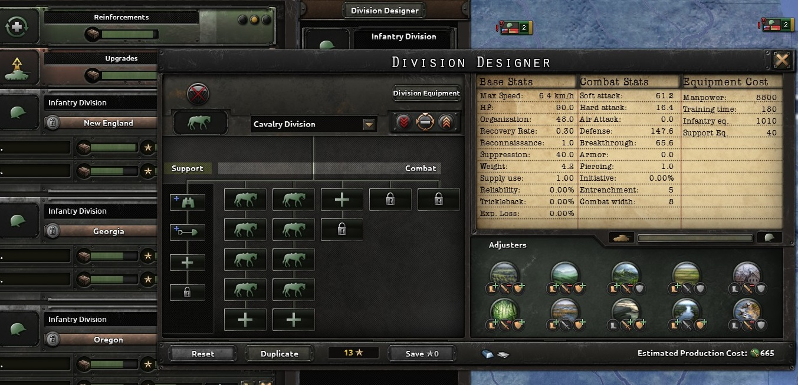
集团军群可以像其他任何单位编组一样指挥，右键点击目的地即可下达移动命令。不过，如果给它们下达“作战计划”——一种沿前线协调的总体命令，用于进攻或防御——它们会打得更好。
选中集团军群后，屏幕底部会显示一排总体命令，即前文提到的作战计划工具栏。每个按钮都有弹出说明，详细介绍该指令的用法。本指南只介绍其中最重要的几项。
海上登陆：用于对敌方领土发起两栖攻击。（也可以用这种方式进入友方领土，但如上所述，直接使用港口到港口的移动更有效率。）
选择海军登陆后，需要先用左键点击一个出发地点，部队将在此集结准备突击。再用右键点击要入侵的敌方省份。注意，你需要掌握其将要穿越的每条海上航道的一些海军情报，因此必须让军舰在这些海域巡逻，或在该海域掌握制海权。
所有计划都需要时间准备，两栖登陆的准备时间尤其长。当数周（或数月）的准备完成后，集团军群上方的灰色箭头会变为淡绿色。点击该箭头即可启动计划。
陆上作战：要为进攻性陆上作战制定作战计划，必须先划定防御前线——这是集团军群开始行动的位置。选择防御前线按钮，在地图上画一条线，标明集团军群从哪里开始行动（多数情况下这是国境线或当前两军的分界线）。然后点击进攻前线按钮（带箭头的线），把前线画到部队应当推进到的位置。
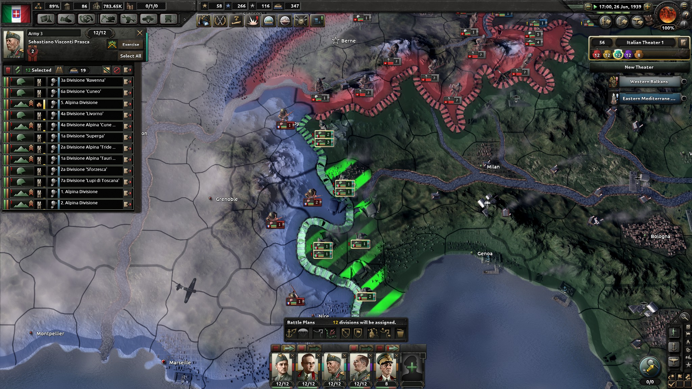
集团军群的部队会沿防御前线自行展开。待其就位、准备就绪后，点击绿色箭头，部队便会开始执行计划。
可以研究学说并聘用顾问，以缩短军事计划的准备时间，或为按计划作战的部队提供加成。
舰船建造完成后会自动在港口编成舰队。如果不喜欢舰队的编组方式，可将舰船剪影从一个舰队拖拽到另一个舰队。
点击剪影肖像并从可用的海军指挥官中选择，即可为舰队指派指挥官。也可以为舰队招募新的海军上将。与上将一样，海军上将可能拥有在特定战斗情形或指挥特定类型舰船时很有用的技能。海军上将通常最多可指挥 10 支舰队。
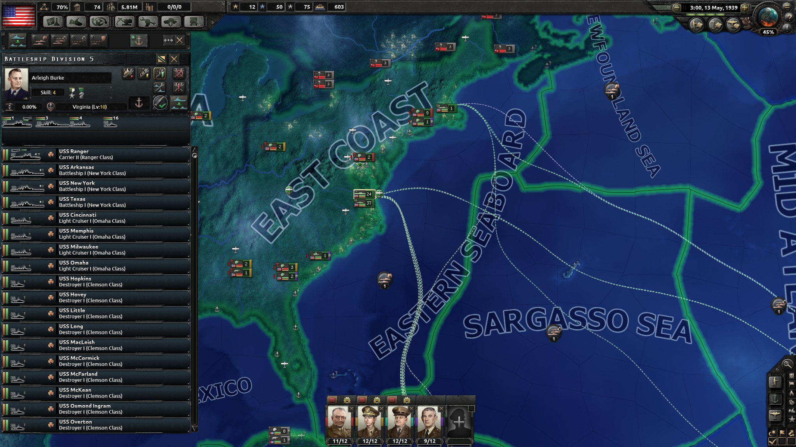
选中一支舰队后，下方会出现一排不同的命令，即任务工具栏，从简单的巡逻任务到运输船队护航任务都有。为舰队选择一个任务（例如潜艇最适合用于袭击运输船队），然后右键点击最多三个相连的海域，也就是彼此相邻的海域。该舰队随后就会在这些区域执行该任务。把舰队调回港口并指派新任务即可取消这些命令。
只要一支舰队在某片海域活动，就能收集到关于该海域的足够情报，从而可以经由该区域运送海外补给，或下令跨越该海域发动海军登陆；但如果敌人在该区域活动，则还需要制海权。
控制空军
- 主条目：空战
与其他单位不同，建造完成的飞机会被送往预备机库。点击空军基地，再点击弹出菜单右上角的按钮（带加号）创建航空队，即可将其投入作战。机场规模越大，能高效使用的飞机就越多。
与海军单位类似，空军单位按区域行动，并被赋予与机型相符的具体任务。战斗机可以执行争夺制空权或截击任务，战略轰炸机可以打击工业或基础设施，战术轰炸机可以为陆上进攻提供近距支援，等等。点击机场即可把航空队分配到某个区域并赋予任务，这会打开空军信息地图模式。
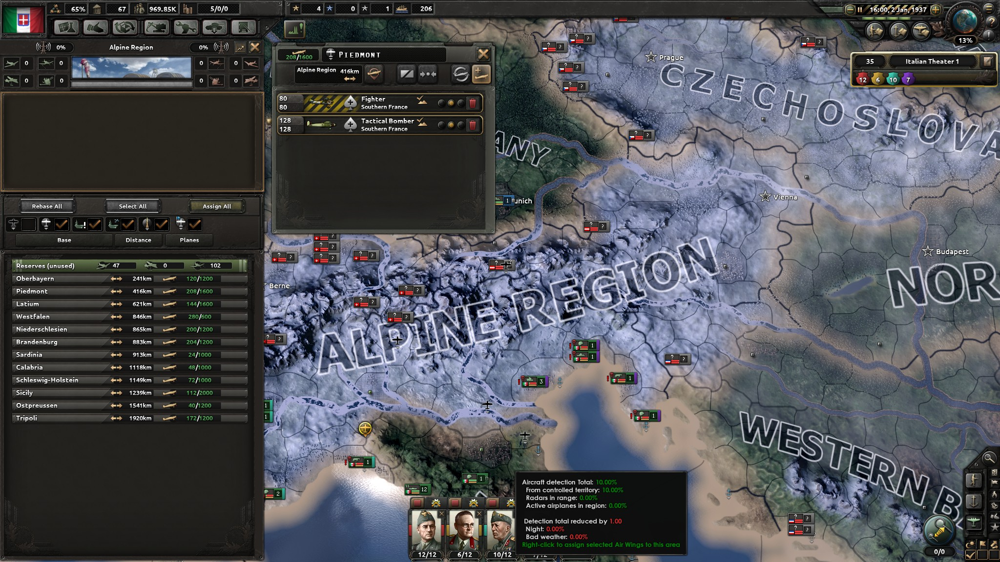
左键点击一支航空队，然后右键点击它应当作战的区域。你可以决定它执行什么任务。飞机的航程有限，取决于其类型（战略轰炸机的航程远大于拦截机）和设计（取决于已研究的科技，或为修改其性能而花费的经验）。
补给
前线部队需要补给才能保持战斗力。补给断绝的集团军完全无法采取任何进攻行动，连简单的移动都不行，即使没有敌军阻挡。补给按领土（也就是说其范围可能大于单个州）计算，每块领土能支撑的部队数量是固定的。不过，补给在送抵实际单位时的最终数值，还会受该单位所在州的基础设施影响。如果一块领土本可轻松支撑 10 个单位，但集团军所处省份的基础设施很差或已受损，就会出现补给瓶颈，于是该集团军并非每个单位都能得到所需补给。
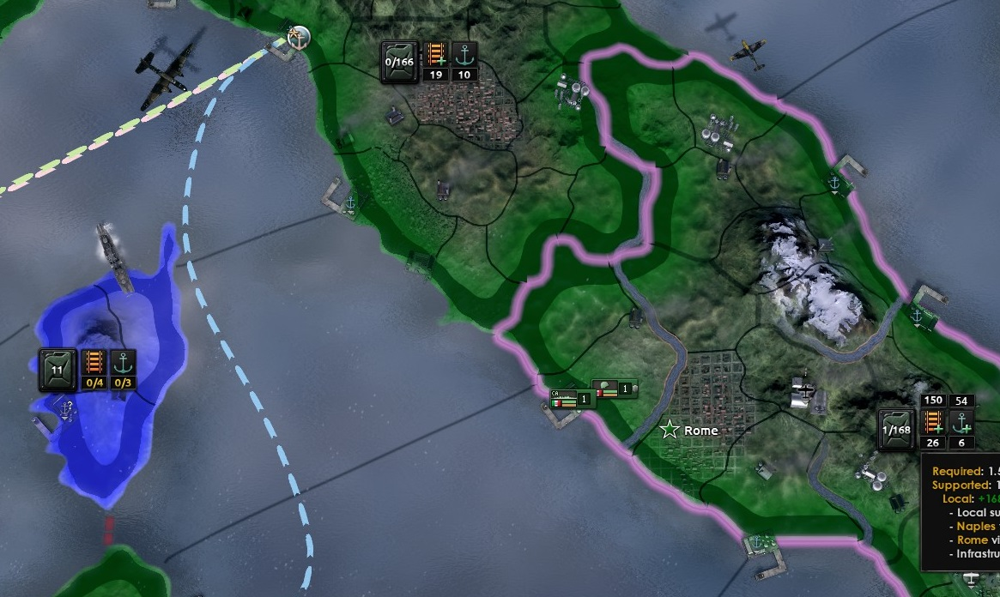
经陆路运送的补给也由相邻领土提供——这形成了一条通往首都的补给线；若首都所在领土不在自己控制之下，则通往另一块领土。正因如此，保持并防守本土与前线之间的各州彼此接壤尤为重要。
当陆路不可用时，补给会通过海路运输。海外补给依靠运输船队和港口完成。规模更大的港口能把更多补给运过海洋，但这也需要更多运输船队。要让海外运输最有效率，就需要把一部分海军舰艇派往船队将要穿越的区域执行护航任务。
点击主界面右下角菜单中的补给地图模式，即可查看补给线与补给容量。
特殊武器
核攻击
如果三项核技术（原子研究、核反应堆、核弹）均已解锁，并且已建成至少一座核反应堆，你就会缓慢获得 核弹
核弹 。
。

要投掷核弹，你必须使用战略轰炸机，并在目标省份所在的战略空域拥有至少 75% 的制空权。选择你想攻击的省份，然后点击省份信息菜单左下角的核打击图标。核弹会摧毁目标的大部分基础设施和工业，并伤害该区域内的任何单位。
火箭攻击
如果你同时研究了实验火箭和 火箭引擎，并且建造了火箭基地，就可以向远处的州发射基础制导导弹
火箭引擎，并且建造了火箭基地，就可以向远处的州发射基础制导导弹
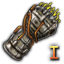
，破坏其基础设施。制导导弹的主要优势在于不消耗任何生产和资源，也不占用任何军用工厂。制导导弹会由每座火箭发射场自动生产，速度为每 24 小时一枚。火箭基地最多可容纳 100 枚制导导弹，这意味着在未发射任何导弹的情况下，发射场会在第 101 天结束时被完全装满。进一步研究要使用你的火箭，按 F3 调出空军战区界面。在「未编组航空队」栏目下，你会看到火箭的图标。点击该图标，将出现一个窗口，显示每个拥有火箭基地的区域以及火箭航空队。选择火箭航空队，点击战略轰炸任务，然后选择目标。
当你的火箭基地开始制造基础制导导弹时，它们将被限制在 500km 航程内。随着你研究改进型火箭引擎和高级火箭引擎，你原有的火箭将被新的、航程更远的火箭取代，每天替换一枚。
投降与赢得战争
当一国失去的固有领土超过某个取决于其战争支持度的阈值时，它就会投降。它在自己的核心或被占领土上的所有师都会被解散，其核心领土会被侵略者立即占领，但它会以流亡政府的形式继续存在，并保留对其殖民地（非核心省份）的控制——例如荷兰仍控制着荷属东印度。只要该国所在阵营的成员继续作战，被占领土上的游击队就仍会是个麻烦——毕竟他们仍可指望获得解放。
如果战败一方有多个国家参战，那么当其中最后一个主要国家投降时，整个阵营都会投降（在世界外交界面上可以看到哪些国家被视为主要国家）。此时游戏会暂停，并开始和平会议。和平会议按战胜国付出的战争贡献分阶段进行。例如，如果同盟国击败德国，而美国在战争中的贡献最大、英国次之，那么美国将首先获得向德国提出要求的权利，其次是英国；随后再由贡献次之的战胜国提出要求。
这一过程会一直持续到所有战胜国都对和平条件满意、所有可提出的要求都已提出，或者没有任何国家还有足够的战争贡献向战败国提出更多要求为止。
战争要求是有代价的，这一代价将从战胜国的战争贡献中扣除。某些要求，例如让一个国家成为傀儡国，需要将其作为战争目标，除非该国的规则允许在没有战争目标的情况下将其变为傀儡国。
上手技巧
在你学习《钢铁雄心 IV》的过程中，谋划统治世界时请记住以下这些重要步骤。
- 开局时你已经有几条武器生产线在运作，其中最重要的是步兵装备，所以在建成更多军用工厂之前，把主要精力放在这里。
- 当你的国家在训练新师时，要同时开设多条步兵生产线，否则你的军队规模就会落后。
- 在游戏早期就规划好国策。例如德国会希望尽快走完那些让它获得对奥地利和捷克斯洛伐克主张的路线；美国需要走出大萧条；法国则必须留意自身的政治稳定度。心中要有一个长期目标。请记住，你不必把国策一个接一个地连续研究完，有时最好稍作等待以抓住时机，尤其是那些提供科研加成的焦点。
- 如果激活特定的国策，每个国家都能获得额外的科研槽位。这些焦点很容易通过名称上的烧瓶图标辨认出来（不过有些带该图标的焦点提供的是科研加成——详情请阅读提示框）。这些槽位解锁得越早，军队的战斗力就越好。
- 研究时尽量不要推进得太超前，因为在时间线上过早追求科技会受到显著惩罚。不过，如果你在电气工程分支中研究计算机，就能大幅缩短它们的总研究时间。
- 如果某个强大的海军并非你战争计划的核心，通常可以忽略这方面的战争与科研树。不过运输船队对贸易和补给总是有用的，所以最好让你拥有的船坞专注于建造它们。
- 如果你处于和平状态，部队应当演习，以便训练到常规水平并获得经验。在现有师编制中额外加入一个团、一线营或支援连，是增强部队实力的简便办法——除非你手头的装备不足以补充现有部队。
- 战时，通常最好让新装备流入新单位手中，而不是用来补充和升级旧单位。调整部队的补充与升级时，要着眼你当前所需——是现在要更多的前线作战单位，还是几个月后更强的打击力。
- 民主国家应尽早更改经济理念，以释放那些原本用于生产消费品的民用工厂。
- 不要忘记在陆军达成目标后让其休整。几天的按兵不动有助于组织度、补充与补给。
进阶技巧
- 记住基础设施与工事。若遭到攻击，沿战略要线（如山地或河流）修建一道陆上要塞和一条作战计划以防守，可以在你等待盟友援助和/或自身增援时为你争取击退入侵的时间。
- 如果你缺少某种资源，但本地能生产它（即钢铁有产出，但数量不足），除非绝对必要，否则尽量避免通过贸易获取。你可以在工业标签下研究开采科技，每级可将你生产的资源量提高 10%，如果研究完所有等级的开采科技，最高可获得 50% 的加成。这将使你的民用工厂从贸易中解放出来，让你能建造更多建筑。
- 当物资短缺时，记得检查生产内容。如果工厂的产出正被用于升级，同时培养太多不同类型的兵员（即摩托化与步兵并行）是没有好处的。举个例子，可以暂时削减摩托化步兵，专注于普通步兵。如果你降低摩托化的生产，并把产能集中用于升级现有单位，腾出来的工厂就可以转去生产步兵装备，进而让你能生产更多单位。
- 当人力偏低时，记得更改征兵法令，并尝试将野战医院作为支援连编入，或解散你不需要的单位，包括航空队和舰船。如果你必须维持一条漫长的战线，又无力削减师的数目，可以考虑把它们编得更小。你往往可以把默认师中的一个步兵营去掉，而它们表现几乎不变。请记住，「总体战动员」（经济法令）会使你可招募人口减少 3%，通常并不值得采用，除非你有多余的人力。机动战争与大规模突击陆军学说，以及通用国策树中的民族主义分支，都会为你的可用人力池提供加成。如果你对长远的人力有顾虑，可以考虑用先进装备组建高科技师。更高的生产成本通常与保存人力相关——一个步兵师损失的人力会比一个机械化师多得多。与普通步兵相比，山地兵和海军陆战队员若在各自擅长的领域部署得当（山地/丘陵与渡河/海军登陆的战斗加成，以及略高的突破属性），可以为你节省一点人力，而他们只消耗更多的步兵武器和更长的训练时间。
- 学说的选择应当谨慎并经过斟酌。必要时可以从一种学说切换到另一种，但这需要消耗大量相应的经验，而且你会失去旧学说。学说的好处在于它们不需要生产，并且一旦解锁其加成就会立即生效。陆军学说中约有 10 种独立学说，空军 12 种，海军 15 种。陆军/空军/海军学说的基础花费为 100 经验，因此要更换一套完全解锁的学说需要相当可观的经验。
- 记得为那些你认为质量不足的单位更新、研究并生产下一级装备。有时单位的升级版会带来远超预期的隐藏加成。
- 在获取资源方面，不同阵营各有劣势与优势。同盟国开局时拥有大部分的橡胶产量，任何与它们开战的国家，若没有进攻盟国东南亚的计划，也没有大量炼油厂，都会在获取橡胶上遇到严重困难。所有飞机以及摩托化/摩托化炮兵和机械化部队都需要橡胶。世界上大部分铬可以在苏联、土耳其、南非、法国、古巴和南斯拉夫找到。舰船、重型坦克以及现代坦克都需要铬。唯一不需要铬的舰船是驱逐舰 I-III、轻巡洋舰 I-III、重巡洋舰 I-III、潜艇 I-III。如果你想维持一支主力舰或现代舰船舰队，就必须为自己或作为盟友拿下这些地方。铝可以在法国、美国、匈牙利、苏联和南斯拉夫找到。所有飞机以及支援装备都需要铝。在规划战略时，你必须考虑要么跳过那些需要你没有的资源的单位的大规模生产，要么计划从敌人手中夺取这些资源，以保障自己的生产，或阻止敌人生产某种特定装备。如果你玩的是小国，也许要根据本经济体所需资源来判断加入哪一方，或者是否加入任何一方。
- 海战与空战乍看之下令人困惑，但只要稍加研究并理解其机制，就会发现它们比陆战更简单。如果你在空战或海战的战斗与/或策略上遇到困难，可查阅深入指南。祝你玩得开心！
参考资料
- ↑ 定义 NPolitics BASE_POLITICAL_POWER_INCREASE = 2
- ↑ 2.0 2.1 来自游戏文件 \Hearts of Iron IV\common\modifiers\00_static_modifiers.txt
- ↑ 定义 NCountry BASE_MAX_COMMAND_POWER = 200